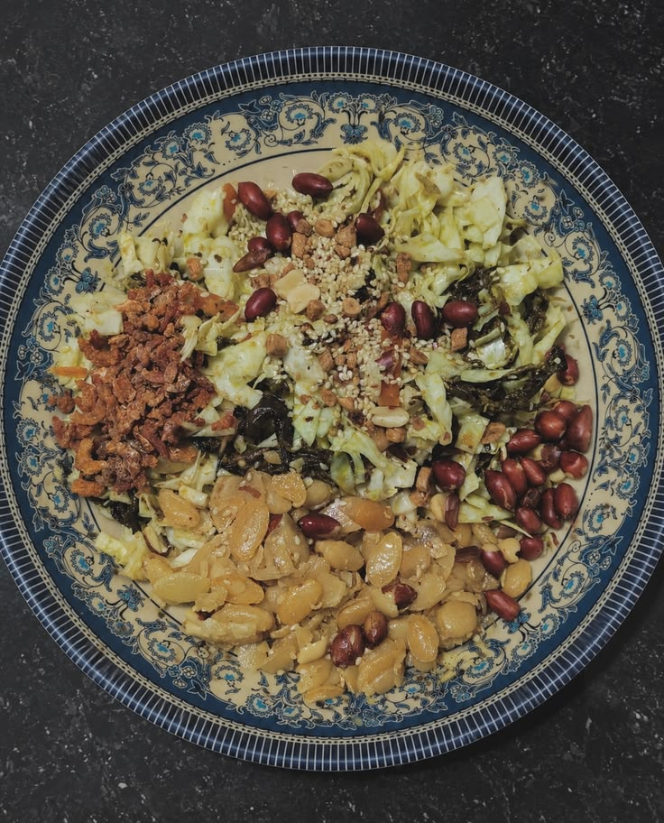

Home
Laphet Thoke Recipe

Description
Lahpet Thoke, or Burmese Fermented Tea Leaf Salad, is one of Myanmar's
most famous and iconic culinary creations. It is a harmonious and complex
dish that uniquely combines earthy, slightly bitter fermented tea leaves
with a vibrant mix of crunchy roasted peanuts, roasted yellow split peas,
fried garlic chips, sesame seeds, and toasted yellow beans.
Traditionally served as a gesture of hospitality and a centerpiece of
social gatherings, this salad is a masterclass in texture and flavor
balance. Every bite delivers a bold explosion of savory, sour, spicy, and
nutty notes, typically dressed with fresh lime juice, fish sauce, and
pounded green bird's eye chilies.
Ingredients
- Fermented tea leaves (Lahpet) – 1/2 cup (rinsed and drained)
-
Crunchy mix (fried garlic chips, roasted peanuts, roasted yellow split
peas, toasted sesame seeds, and roasted chana dal) – 1 cup total
- Cabbage – 2 cups (finely shredded)
- Tomatoes – 2 medium (seeded and thinly sliced)
- Fresh green chilies – 3 to 4 (finely chopped)
- Garlic oil or peanut oil – 2 tablespoons
- Fresh lime juice – 2 tablespoons (or to taste)
- Fish sauce – 1 to 2 tablespoons (or salt to taste)
- Dried shrimp powder (optional) – 1 tablespoon
- Fresh cilantro – a small handful (chopped)
Steps
-
Prepare the fermented tea leaves: Rinse the fermented tea leaves lightly
in water and squeeze out any excess liquid. Place them in a bowl and
finely chop them if the leaves are large.
-
Prep the vegetables: Finely shred the cabbage, slice the tomatoes into
thin strips (discarding the watery seeds to keep the salad crisp), and
chop the green chilies and cilantro.
-
Mix the base: In a large mixing bowl, combine the prepared tea leaves,
shredded cabbage, sliced tomatoes, and chopped green chilies.
-
Dress the salad: Drizzle the garlic or peanut oil, fresh lime juice, and
fish sauce over the mixture. If using, add the dried shrimp powder for
an extra layer of umami flavor.
-
Add the crunch: Just before serving, toss in the crunchy mix of roasted
nuts, fried garlic, and seeds so they retain their crispness.
-
Toss and serve: Mix everything thoroughly together until well combined.
Taste and adjust the seasoning with more lime juice or fish sauce if
needed, then garnish with fresh cilantro and serve immediately.